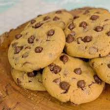

Cookie de Nutella

Ingredientes
- 1 xícara (chá) de manteiga derretida
- 1 xícara (chá) de açúcar mascavo
- 1/2 xícara (chá) de açúcar refinado
- 2 ovos
- 2 xícaras (chá) de farinha de trigo
- 1 colher (chá) de fermento em pó
- 1/2 xícara (chá) de Nutella
- 1/2 xícara (chá) de gotas de chocolate
Modo de Preparo
- Pré-aqueça o forno a 180°C.
- Em uma tigela, misture a manteiga, os açúcares e os ovos.
- Adicione a farinha e o fermento, misturando bem.
- Incorpore a Nutella e as gotas de chocolate.
- Faça bolinhas com a massa e coloque em uma forma untada.
- Asse por 12-15 minutos, ou até as bordas ficarem douradas.
Dicas
- Adicione avelãs picadas para um sabor crocante.
- Sirva com uma colher de Nutella por cima para mais sabor.